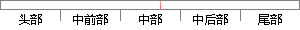

傅立叶原理表明：任何连续测量的时序或信号，都可以表示为不同频率的正弦波信号的无限叠加。
片段位置图

相似结果|
相似片段 1：的频谱图。频谱图描述了信号的频率结构及频率与该频率信号幅度的关系。傅立叶原理表明：任何连续测量的时序或信号，都可以表示为不同频率的正弦波信号的无限叠加。而根据该原理创立的傅立叶变换算法利用直接测量到的原始
相似片段 2：通过傅立叶变换可以将织物图像由空间域转换为频率域。从频率域中可以获得反映密度特征的信息【3。21。傅立叶原理表明：任何连续测量的时序或信号，都可以表示为不同频率的正弦波信号的无限叠加。而根据该原理
相似片段 3：及小波变换基础5．1．1傅立叶变换要知道傅立叶变换算法的意义，首先要了解傅立叶原理的意义。傅立叶原理表明：任何连续测量的时序或信号，都可以表示为不同频率的正弦波信号的无限叠加。丽根据该原理创立的傅立叶
相似片段 4：傅立叶变换算法的意义，首先必须要了解傅立叶原理的意义。傅立叶原理是信号处理的重要理论基础．傅立叶原理表明任何连续测量的信号或时序，都可以表示为无限叠加的不同频率的正弦波信号。利用直接测量的原始信号
相似片段 5：。傅立叶原理表明：任何连续测量的时序或信号，都可以表示为不同频率的正弦波信号的无限叠加。而根据该原理创立的傅立叶变换算法利用直接测量到的原始信号，以累加方式来计算该信号中不同正弦波信号的频率、振幅和相位。和
相似片段 6：?要知道傅立叶变换算法的意义，首先要了解傅立叶原理的意义。傅立叶原理表明：任何连续测量的时序或信号，都可以表示为不同频率的正弦波信号的无限叠加。而根据该原理创立的傅立叶变换算法利用直接测量到的原始信号
相似片段 7：傅立叶原理表明：任何连续测量的时序或信号，都可以表示为不同频率的正弦波信号的无限叠加。而根据该原理创立的傅立叶变换算法利用直接测量到的原始信号，以累加方式来计算该信号中不同正弦波信号的频率、振幅和
相似片段 8：例如在信号处理中，傅里叶变换的典型用途是将信号分解成幅值分量和频率分量。傅立叶变换是数字信号处理领域一种很重要的算法。傅立叶原理表明：任何连续测量的时序或信号，都可以表示为不同频率的正弦波信号的无限
相似片段 9：实验中任何连续测量的时序信号，都可以表示为不同频率的正弦波信号的无限叠加，我们可以将该过程看作是一个无限逼近的过程。在实验研究过程中通常关心的内容不止是以上的叠加过程，根据傅立叶变换算法利用直接测量到
相似片段 10：的时序或信号，都可以表示为不同频率的正弦波信号的无限叠加。而由该原理创立的傅立叶变换算法，利用直接测量到的原始信号，以累加的方式来计算该信号中不同正弦波信号的频率、振幅和相位。为了得到与超声波激励信号
|
※ 片段修改建议 ※
近似词参考：- 原理：道理
- 表明：表白 讲明 解释 评释 注解
- 连续：持续 继续 接连 连气儿 陆续 延续 一连
- 测量：丈量
- 信号：旌旗灯号
- 表示：暗示 默示 示意 透露表现 表现
- 不同：分歧 差别
- 信号：旌旗灯号
- 无限：无穷
系统自动生成语句：傅立叶道理表白：任何持续丈量的时序或旌旗灯号，都可以暗示为分歧频率的正弦波旌旗灯号的无穷叠加。
注：本片段修改建议为系统自动生成，仅供参考。